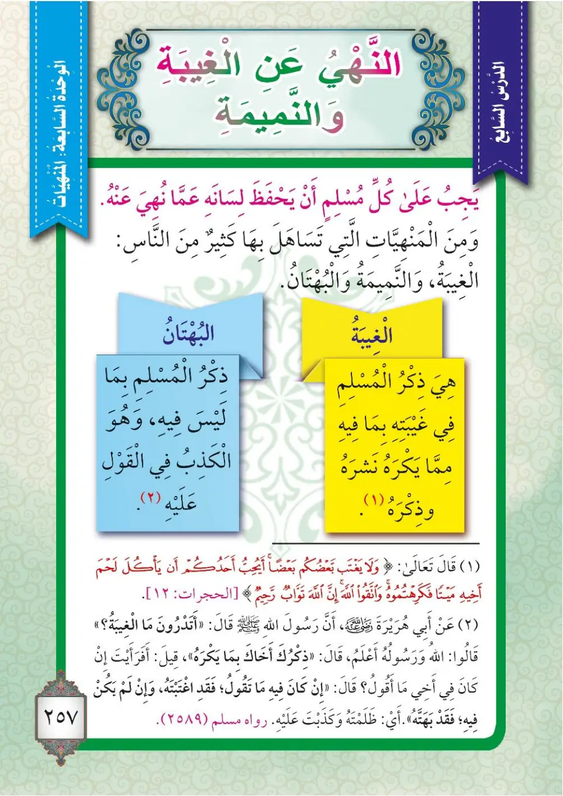
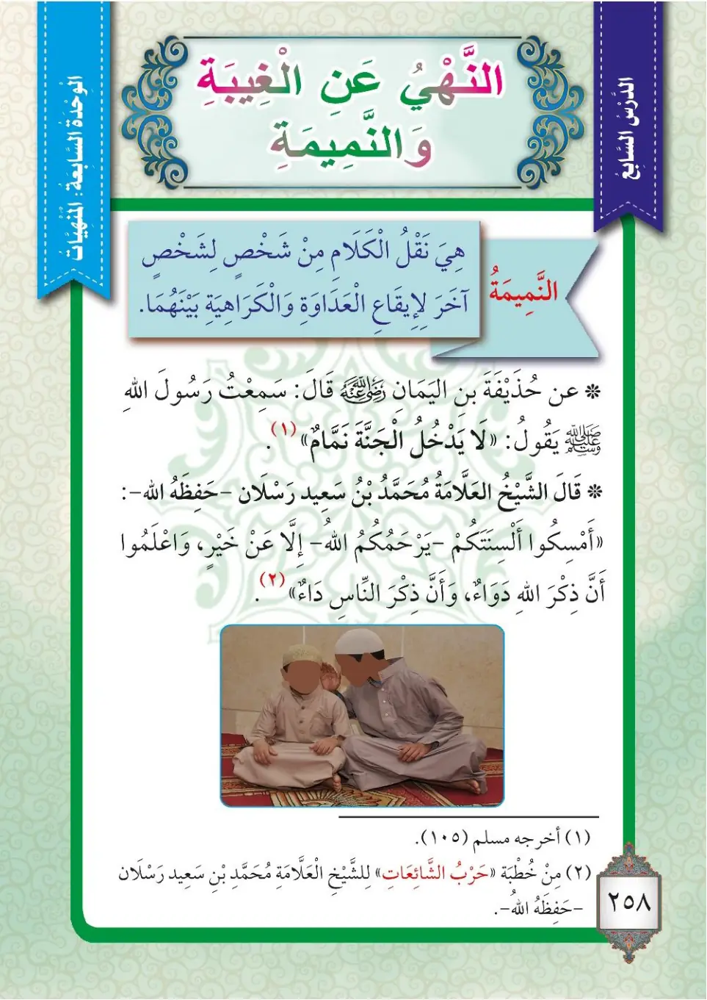

Stage 3·المرحلة الثالثة⭐ Unit 3
النَّهْيُ عَنِ الْغِيبَةِ وَالنَّمِيمَةِ The Prohibition of Backbiting and Gossip
From the Textbookpp. 258–259


على كلِّ مسلمٍ أن يحفظَ لسانَهُ عما نُهي عنهُ، ومن المنهياتِ التي يتساهلُ بها كثيرٌ من الناسِ: الغيبةُ والنميمةُ والبهتانُ.
'Ala kulli muslimin an yahfaza lisanaHu 'amma nuhiya 'anHu, wa mina al-manhiyyati allati yatasahalu biHa kathirun mina an-nas: al-ghibatu wan-namimatu wal-buhtan.
Every Muslim must guard his tongue from what he has been forbidden. Among the forbidden things that many people take lightly are: backbiting (ghibah), gossip (nameemah), and slander (buhtan).
ஒவ்வொரு முஸ்லிமும் தடை செய்யப்பட்டவற்றிலிருந்து தன் நாவைக் காத்துக்கொள்ள வேண்டும். மக்களில் பலர் இலகுவாக எடுத்துக்கொள்ளும் தடை செய்யப்பட்டவற்றில்: புறங்கூச்சல் (கீபா), வதந்தி (நமீமா), அவதூறு (புஹ்தான்) ஆகியவை அடங்கும்.
الغيبةُ: هي ذكرُكَ أخاكَ بما يكرهُ في غيبتهِ. والبهتانُ: هو القولُ في أخيكَ بالكذبِ بما ليسَ فيه.
Al-ghibatu: Hiya dhikruKa akhaKa bima yakrah fi ghaibatiHi. Wal-buhtanu: Huwa al-qawlu fi akhiKa bil-kidhbi bima laysa fihi.
Backbiting (ghibah) is: your mentioning your brother, in his absence, with that which he dislikes. Slander (buhtan) is: saying about your brother, falsely, that which is not in him.
கீபா (புறங்கூச்சல்) என்பது: உன் சகோதரர் வெறுக்கும் விஷயத்தை, அவர் இல்லாத நிலையில், நீ கூறுவதாகும். புஹ்தான் (அவதூறு) என்பது: பொய்யாக, உன் சகோதரர் மீது அவரிடம் இல்லாததைக் கூறுவதாகும்.
﴿يَا أَيُّهَا الَّذِينَ آمَنُوا اجْتَنِبُوا كَثِيرًا مِّنَ الظَّنِّ إِنَّ بَعْضَ الظَّنِّ إِثْمٌ ۖ وَلَا تَجَسَّسُوا وَلَا يَغْتَب بَّعْضُكُم بَعْضًا ۚ أَيُحِبُّ أَحَدُكُمْ أَن يَأْكُلَ لَحْمَ أَخِيهِ مَيْتًا فَكَرِهْتُمُوهُ ۚ وَاتَّقُوا اللَّهَ ۚ إِنَّ اللَّهَ تَوَّابٌ رَّحِيمٌ﴾
Ya ayyuHa alladhina amanu-ijtanibu kathiran mina az-zann; inna ba'da az-zanni ithm; wa la tajassasu wa la yaghtab ba'dukum ba'dan; a-yuhibbu ahadukum an ya'kula lahma akhiHi maytan fa-karihtumuHu; wa-ttaqu Allaha; inna Allaha tawwabun rahim.
Believers, avoid making too many assumptions- some assumptions are sinful- and do not spy on one another or speak ill of people behind their backs: would any of you like to eat the flesh of your dead brother? No, you would hate it. So be mindful of God: God is ever relenting, most merciful.
நம்பிக்கையாளர்களே! அதிகமான ஊகங்களிலிருந்து விலகிக்கொள்ளுங்கள்; நிச்சயமாக சில ஊகங்கள் பாவமாகும். ஒற்று எடுக்காதீர்கள்; உங்களில் ஒருவர் மற்றொருவரைப் புறங்கூற வேண்டாம். உங்களில் எவரேனும் தன் இறந்த சகோதரரின் சதையை உண்ண விரும்புவாரா? நிச்சயமாக நீங்கள் அதை வெறுப்பீர்கள். அல்லாஹ்வை அஞ்சுங்கள்; நிச்சயமாக அல்லாஹ் மிக மன்னிப்பவனாகவும், கருணையாளனாகவும் இருக்கிறான்.
عن أبي هريرةَ رضي الله عنه أنَّ رسولَ اللهِ ﷺ قال: «أتدرونَ ما الغيبةُ؟» قالوا: اللهُ ورسولُهُ أعلمُ. قال: «ذكرُكَ أخاكَ بما يكرهُ». قيل: أفرأيتَ إن كان في أخي ما أقولُ؟ قال: «إن كان فيه ما تقولُ فقدِ اغتبتَهُ، وإن لم يكنْ فيه ما تقولُ فقد بهتَّهُ». رواه مسلمٌ (2589).
'An Abi Hurairata radiyallahu 'anHu anna rasula Allahi ﷺ qala: «Atadrun ma al-ghibah?» qalu: Allahu wa rasuluHu a'lam. Qala: «DhikruKa akhaKa bima yakrah». Qila: afara'ayta in kana fi akhi ma aqul? Qala: «In kana fihi ma taqul fa-qadi-ghtabtaHu, wa in lam yakun fihi ma taqul fa-qad bahattaHu». RawaHu Muslimun (2589).
Abu Hurairah, may Allah be pleased with him, reported that the Messenger of Allah ﷺ said: "Do you know what backbiting (ghibah) is?" They said: "Allah and His Messenger know best." He said: "Your mentioning your brother with that which he dislikes." It was said: "What if my brother is as I say?" He said: "If he is as you say, then you have backbitten him; and if he is not as you say, then you have slandered him." Narrated by Muslim (2589).
அபூ ஹுரைரா (ரலி) அறிவித்தார்கள்: "புறங்கூச்சல் (கீபா) என்றால் என்ன தெரியுமா?" என்று நபி ﷺ கேட்டார்கள். "அல்லாஹ்வும் அவன் தூதருமே நன்கறிந்தவர்கள்" என்று மக்கள் கூறினார்கள். "உன் சகோதரர் வெறுக்கும் விஷயத்தை நீ கூறுவதே" என்று கூறினார்கள். "நான் கூறும் விஷயம் என் சகோதரரிடம் இருந்தால்?" என்று கேட்கப்பட்டது. "அது அவரிடம் இருந்தால் நீ புறங்கூறிவிட்டாய்; அவரிடம் இல்லையென்றால் நீ அவதூறு செய்துவிட்டாய்" என்று கூறினார்கள். (முஸ்லிம் 2589)
النميمةُ: هي نقلُ الكلامِ من شخصٍ إلى آخرَ؛ لإيقاعِ العداوةِ والكراهيةِ بينهما.
An-namimatu: Hiya naqlu al-kalami min shakhsin ila akhara; li-iqa'i al-'adawati wal-karahiyati baynaHuma.
Gossip (nameemah) is: carrying words from one person to another, in order to cause enmity and hatred between the two.
நமீமா (வதந்தி) என்பது: இருவருக்கிடையே பகைமையையும் வெறுப்பையும் ஏற்படுத்துவதற்காக, ஒருவரிடமிருந்து மற்றொருவரிடம் பேச்சைச் சுமந்து செல்வதாகும்.
عن حذيفةَ بنِ اليمانِ رضي الله عنه قال: سمعتُ رسولَ اللهِ ﷺ يقولُ: «لا يدخلُ الجنةَ نمَّامٌ». أخرجه مسلمٌ (105).
'An Hudhayfata ibni al-Yamani radiyallahu 'anHu qala: sami'tu rasula Allahi ﷺ yaqul: «La yadkhulu al-jannata nammamun». Akhrajahu Muslimun (105).
Hudhayfah ibn al-Yaman, may Allah be pleased with him, said: I heard the Messenger of Allah ﷺ say: "A spreader of gossip will not enter Paradise." Recorded by Muslim (105).
ஹுதைஃபா இப்னு அல்-யமான் (ரலி) கூறினார்கள்: "வதந்தி பரப்புபவர் சொர்க்கத்தில் நுழைய மாட்டார்" என்று அல்லாஹ்வின் தூதர் ﷺ கூறக் கேட்டேன். (முஸ்லிம் 105)
قال الشيخُ العلَّامةُ محمدُ بنُ سعيدٍ رسلانَ -حفظهُ اللهُ-: «أمسكوا ألسنتَكم -يرحمُكم اللهُ- إلا عن خيرٍ، واعلموا أنَّ ذكرَ اللهِ دواءٌ، وأنَّ ذكرَ الناسِ داءٌ».
Qala ash-shaykhu al-'allamatu Muhammadu ibnu Sa'idin Raslan -hafizaHu Allah-: «Amsiku alsinataKum -yarhamuKumu Allah- illa 'an khayrin, wa-'lamu anna dhikra Allahi dawa'un, wa anna dhikra an-nasi da'».
Shaykh al-'Allamah Muhammad ibn Sa'id Raslan -may Allah preserve him- said: "Withhold your tongues -may Allah have mercy on you- except for good, and know that the remembrance of Allah is a cure, and that mentioning people (in their absence) is a disease."
அறிஞர் பெருமான் முஹம்மத் பின் ஸயீத் ரஸ்லான் (அல்லாஹ் அவரைக் காப்பானாக) கூறினார்கள்: "நன்மையைத் தவிர வேறு எதற்கும் உங்கள் நாவுகளை அடக்கிக்கொள்ளுங்கள் - அல்லாஹ் உங்களுக்குக் கருணை புரிவானாக. அல்லாஹ்வை நினைவுகூர்வது மருந்து எனவும், மக்களைப் (இல்லாத நிலையில்) பேசுவது நோய் எனவும் அறிந்துகொள்ளுங்கள்."